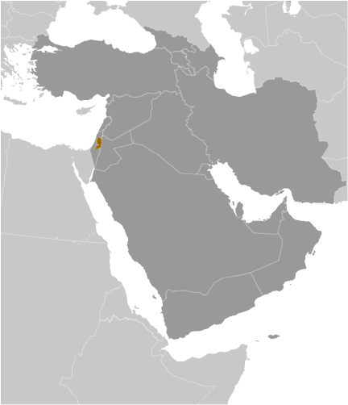
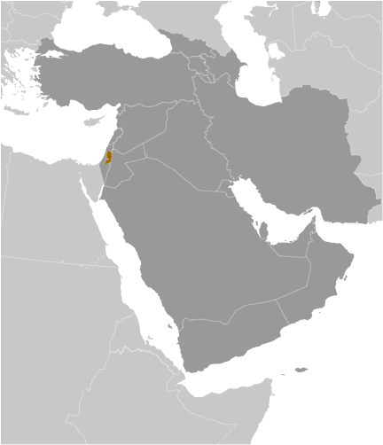

Middle East :: WEST BANK
Introduction :: WEST BANK
-
From the early 16th century through 1917, the area now known as the West Bank fell under Ottoman rule. Following World War I, the Allied powers (France, UK, Russia) allocated the area to the British Mandate of Palestine. After World War II, the UN passed a resolution to establish two states within the Mandate, and designated a territory including what is now known as the West Bank as part of the proposed Arab state. During the 1948 Arab-Israeli War, the area was captured by Transjordan (later renamed Jordan). Jordan annexed the West Bank in 1950. In June 1967, Israel captured the West Bank and East Jerusalem during the 1967 Six-Day War. With the exception of East Jerusalem, roughly 60% of the West Bank remains under Israeli military control. Israel transferred security and civilian responsibility for a number of Palestinian-populated areas of the West Bank and Gaza Strip to the Palestinian Authority (PA) under a series of agreements signed between 1993 and 1999, the so-called “Oslo Accords.” Negotiations to determine the permanent status of the West Bank and Gaza Strip stalled after the outbreak of an intifada in mid-2000. In early 2003, the "Quartet" of the US, EU, UN, and Russia, presented a roadmap to a final peace settlement by 2005, calling for two states - Israel and a democratic Palestine.Following Palestinian leader Yassir ARAFAT's death in late 2004 and the subsequent election of Mahmud ABBAS (head of the Fatah political faction) as PA president, Israel and the Palestinians agreed to move the peace process forward. Israel in late 2005 unilaterally withdrew all of its settlers and soldiers, dismantled its military facilities in the Gaza Strip, and redeployed its military from several West Bank settlements, but it continues to control maritime, airspace, and other access. In early 2006, the Islamic Resistance Movement, HAMAS, won the Palestinian Legislative Council election and took control of the PA government. Attempts to form a unity government failed, and violent clashes between Fatah and HAMAS supporters ensued, culminating in HAMAS's violent seizure of all military and governmental institutions in the Gaza Strip. Fatah and HAMAS have made several attempts at reconciliation, but the factions have been unable to implement details on governance and security. In an attempt to reenergize peace talks between the Israelis and Palestinians, France in June 2016 hosted a ministerial meeting that included participants from 29 countries, although not Israel or the Palestinians, to lay the groundwork for an envisioned "multilateral peace conference" later in the year.
Geography :: WEST BANK
-
Middle East, west of Jordan, east of Israel32 00 N, 35 15 EMiddle Easttotal: 5,860 sq kmland: 5,640 sq kmwater: 220 sq kmnote: includes West Bank, Latrun Salient, and the northwest quarter of the Dead Sea, but excludes Mt. Scopus; East Jerusalem and Jerusalem No Man's Land are also included only as a means of depicting the entire area occupied by Israel in 1967country comparison to the world: 172slightly smaller than Delawaretotal: 478 kmborder countries (2): Israel 330 km, Jordan 148 km0 km (landlocked)none (landlocked)temperate; temperature and precipitation vary with altitude, warm to hot summers, cool to mild wintersmostly rugged, dissected upland in west, flat plains descending to Jordan River Valley to the eastmean elevation: NAelevation extremes: lowest point: Dead Sea -408 mhighest point: Nabi Yunis 1,020 marable landagricultural land: 43.3%arable land 7.4%; permanent crops 11%; permanent pasture 24.9%forest: 1.5%other: 55.2%note: includes Gaza Strip (2011 est.)240 sq km; note - includes Gaza Strip (2012)Palestinian settlements are primarily located in the central to western half of the territory; Jewish settlements are found in pockets throughout, particularly in the northeast, north-central, and around Jerusalemdroughtsadequacy of freshwater supply; sewage treatmentlandlocked; highlands are main recharge area for Israel's coastal aquifers; there are about 380 Israeli civilian sites, including about 213 settlements and 132 small outpost communities in the West Bank and 35 sites in East Jerusalem (2017)
People and Society :: WEST BANK
-
2,747,943 (July 2017 est.)note: approximately 391,000 Israeli settlers live in the West Bank (2016); approximately 201,200 Israeli settlers live in East Jerusalem (2014)country comparison to the world: 141noun: NAadjective: NAPalestinian Arab, Jewish, otherArabic, Hebrew (spoken by Israeli settlers and many Palestinians), English (widely understood)Muslim 80-85% (predominantly Sunni), Jewish 12-14%, Christian 1-2.5% (mainly Greek Orthodox), other, unaffiliated, unspecified <1% (2012 est.)0-14 years: 36.5% (male 514,691/female 488,233)15-24 years: 21.37% (male 299,859/female 287,367)25-54 years: 34.1% (male 475,860/female 461,252)55-64 years: 4.54% (male 64,275/female 60,507)65 years and over: 3.49% (male 43,060/female 52,839) (2017 est.)total dependency ratio: 75.8youth dependency ratio: 70.5elderly dependency ratio: 5.2potential support ratio: 19.1note: data represent Gaza Strip and the West Bank (2015 est.)total: 21.1 yearsmale: 20.9 yearsfemale: 21.3 years (2017 est.)country comparison to the world: 1851.84% (2017 est.)country comparison to the world: 5626.3 births/1,000 population (2017 est.)country comparison to the world: 473.5 deaths/1,000 population (2017 est.)country comparison to the world: 216-4.5 migrant(s)/1,000 population (2017 est.)country comparison to the world: 186Palestinian settlements are primarily located in the central to western half of the territory; Jewish settlements are found in pockets throughout, particularly in the northeast, north-central, and around Jerusalemurban population: 75.7% of total population (2017)rate of urbanization: 2.75% annual rate of change (2015-20 est.)note: data represent Gaza Strip and the West Bankat birth: 1.06 male(s)/female0-14 years: 1.05 male(s)/female15-24 years: 1.04 male(s)/female25-54 years: 1.03 male(s)/female55-64 years: 1.06 male(s)/female65 years and over: 0.73 male(s)/femaletotal population: 1.04 male(s)/female (2016 est.)45 deaths/100,000 live birthsnote: data represent Gaza Strip and the West Bank (2015 est.)country comparison to the world: 99total: 14.1 deaths/1,000 live birthsmale: 15.8 deaths/1,000 live birthsfemale: 12.3 deaths/1,000 live births (2017 est.)country comparison to the world: 105total population: 75.2 yearsmale: 73.2 yearsfemale: 77.4 years (2017 est.)country comparison to the world: 1103.27 children born/woman (2017 est.)country comparison to the world: 4857.2% (includes Gaza Strip and West Bank) (2014)1.3 physicians/1,000 population (2013)1.2 beds/1,000 population (2010)improved:urban: 50.7% of populationrural: 81.5% of populationtotal: 58.4% of populationunimproved:urban: 49.3% of populationrural: 18.5% of populationtotal: 41.6% of populationnote: includes Gaza Strip and the West Bank (2015 est.)improved:urban: 93% of populationrural: 90.2% of populationtotal: 92.3% of populationunimproved:urban: 7% of populationrural: 9.8% of populationtotal: 7.7% of populationnote: includes Gaza Strip and the West Bank (2015 est.)NANANA1.4%note: estimate are for Gaza and the West Bank (2014)1.3% of GDPnote: includes Gaza Strip (2015)definition: age 15 and over can read and writetotal population: 96.9%male: 98.6%female: 95.2%note: estimates are for Gaza and the West Bank (2016 est.)total: 13 yearsmale: 12 yearsfemale: 14 yearsnote: data represent Gaza and the West Bank (2015)total: 40.7%male: 36.4%female: 60.8%note: includes Gaza Strip (2015 est.)country comparison to the world: 15
Government :: WEST BANK
-
conventional long form: noneconventional short form: West Banketymology: name refers to the location of the region - occupied and administered by Jordan after 1948 - that fell on the far side (west bank) of the Jordan River in relation to Jordan proper; the designation was retained following the 1967 Six-Day War and the subsequent changes in government
Economy :: WEST BANK
-
Israeli-Palestinian violence in 2015 exacerbated challenges to economic growth in the West Bank - the larger of the two areas comprising the Palestinian Territories. Increased security restrictions and political instability slowed economic activity, and Israel’s four-month withholding of taxes and other fees it collects on the Palestinian Authority’s (PA) behalf caused the PA to delay salary payments to its employees, which in turn had broader effects on business activity and consumer demand.Longstanding Israeli closure policies continue to disrupt labor and trade flows and the territory’s industrial capacity, limit imports and exports, and constrain private sector development. The PA for the foreseeable future will continue to rely heavily on donor aid for its budgetary needs and economic activity.$21.22 billion (2014 est.)$20.15 billion (2013 est.)$19.95 billion (2012 est.)note: data are in 2014 US dollars; includes Gaza Stripcountry comparison to the world: 143$9.828 billion (2014 est.)note: excludes Gaza Strip5.3% (2014 est.)1% (2013 est.)6% (2012 est.)note: excludes Gaza Stripcountry comparison to the world: 32$4,300 (2014 est.)$4,400 (2013 est.)$4,600 (2012 est.)note: includes Gaza Stripcountry comparison to the world: 1747.8% of GDP (2014 est.)9.5% of GDP (2013 est.)5% of GDP (2012 est.)note: includes Gaza Stripcountry comparison to the world: 161household consumption: 92.2%government consumption: 26.4%investment in fixed capital: 22.5%investment in inventories: -2.5%exports of goods and services: 18.2%imports of goods and services: -56.7%note: excludes Gaza Strip (2016 est.)agriculture: 2.9%industry: 20.9%services: 62.7%note: excludes Gaza Strip (2016 est.)olives, citrus fruit, vegetables; beef, dairy productssmall-scale manufacturing, quarrying, textiles, soap, olive-wood carvings, and mother-of-pearl souvenirs6.6%note: includes Gaza Strip (2016 est.)country comparison to the world: 281.202 millionnote: excludes Gaza Strip (2016 est.)country comparison to the world: 138agriculture: 11.5%industry: 34.4%services: 54.1%note: excludes Gaza Strip (2013 est.)26.9% (2016 est.)25.9% (2015 est.)note: excludes Gaza Stripcountry comparison to the world: 19518% (2011 est.)lowest 10%: 3.2%highest 10%: 28.2%note: includes Gaza Strip (2009 est.)34.5 (2009 est.)38.7 (2007 est.)note: includes Gaza Stripcountry comparison to the world: 98revenues: $1.227 billionexpenditures: $1.124 billionnote: includes Palestinian Authority expenditures in the Gaza Strip (2016 est.)12.5% of GDP (2016 est.)country comparison to the world: 2051.1% of GDP (2016 est.)country comparison to the world: 2224.4% of GDP (2014 est.)23.8% of GDP (2013 est.)country comparison to the world: 174calendar year-0.2% (2016 est.)1.4% (2015 est.)note: excludes Gaza Stripcountry comparison to the world: 426.5% (31 December 2016 est.)6.8% (31 December 2015 est.)country comparison to the world: 118$317 million (31 December 2016 est.)$265.2 million (31 December 2015 est.)country comparison to the world: 178$2.538 billion (31 December 2016 est.)$2.273 billion (31 December 2015 est.)country comparison to the world: 144$1.712 billion (31 December 2016 est.)$1.418 billion (31 December 2015 est.)country comparison to the world: 153$3.339 billion (31 December 2015 est.)$3.187 billion (31 December 2014 est.)$3.247 billion (31 December 2013 est.)country comparison to the world: 94$-1.348 billion (2016 est.)$-2.066 billion (2015 est.)country comparison to the world: 136$1.827 billion (2016 est.)$1.757 billion (2015 est.)note: excludes Gaza Stripcountry comparison to the world: 141stone, olives, fruit, vegetables, limestone$6.11 billion (2016 est.)$6.057 billion (2015 est.)note: data include the Gaza Stripcountry comparison to the world: 114food, consumer goods, construction materials, petroleum, chemicals$312.8 million (31 December 2016 est.)$583 million (31 December 2015 est.)country comparison to the world: 153$1.662 billion (31 March 2016 est.)$1.467 billion (31 March 2015 est.)note: data include the Gaza Stripcountry comparison to the world: 153new Israeli shekels (ILS) per US dollar -3.8406 (2016 est.)3.841 (2015 est.)3.8869 (2014 est.)3.5779 (2013 est.)3.86 (2012 est.)
Energy :: WEST BANK
-
population without electricity: 80,930electrification - total population: 98%electrification - urban areas: 99%electrification - rural areas: 93%note: data for West Bank and Gaza Strip combined (2012)475 million kWh (2015 est.)country comparison to the world: 1685.845 billion kWh (2015 est.)country comparison to the world: 1150 kWh (2016)country comparison to the world: 2155.403 billion kWh (2015 est.)country comparison to the world: 37152,000 kWnote: includes Gaza Strip (2015 est.)country comparison to the world: 17092.1% of total installed capacity (2015 est.)country comparison to the world: 580% of total installed capacity (2015 est.)country comparison to the world: 2090% of total installed capacity (2015 est.)country comparison to the world: 2139.2% of total installed capacity (2015 est.)country comparison to the world: 720 bbl/day (2016 est.)country comparison to the world: 2120 bbl/day (2014 est.)country comparison to the world: 2110 bbl/day (2014 est.)country comparison to the world: 2110 bbl (1 January 2017)country comparison to the world: 2120 bbl/day (2014 est.)country comparison to the world: 21319,000 bbl/day (2015 est.)country comparison to the world: 1410 bbl/day (2014 est.)country comparison to the world: 21318,690 bbl/day (2014 est.)country comparison to the world: 1210 cu m (2013 est.)country comparison to the world: 2120 cu m (2013 est.)country comparison to the world: 1470 cu m (2013 est.)country comparison to the world: 2100 cu m (2013 est.)country comparison to the world: 2090 cu m (1 January 2014 es)country comparison to the world: 2073 million Mt (2013 est.)country comparison to the world: 142
Communications :: WEST BANK
-
total subscriptions: 406,500 (includes Gaza Strip)subscriptions per 100 inhabitants: 9 (July 2016 est.)country comparison to the world: 104total: 3.531 million (includes Gaza Strip)subscriptions per 100 inhabitants: 76 (includes Gaza Strip) (July 2016 est.)country comparison to the world: 135general assessment: continuing political and economic instability has impeded significant liberalization of the telecommunications industrydomestic: Israeli company BEZEK and the Palestinian company PALTEL are responsible for fixed-line services; PALTEL plans to establish a fiber-optic connection to Jordan to route domestic mobile calls; the Palestinian JAWWAL company and WATANIYA PALESTINE provide cellular servicesinternational: country code - 970; 1 international switch in Ramallah (2010)the Palestinian Authority operates 1 TV and 1 radio station; about 20 private TV and 40 radio stations; both Jordanian TV and satellite TV are accessible (2013).ps; note - same as Gaza Striptotal: 2.673 million (includes Gaza Strip)percent of population: 57.4% (includes Gaza Strip) (July 2016 est.)country comparison to the world: 112
Transportation :: WEST BANK
-
2 (2013)country comparison to the world: 203total: 21,524 to 2,437 m: 1under 914 m: 1 (2013)1 (2013)total: 4,686 kmpaved: 4,686 kmnote: includes Gaza Strip (2010)country comparison to the world: 153
Transnational Issues :: WEST BANK
-
the current status of the West Bank is subject to the Israeli-Palestinian Interim Agreement - permanent status to be determined through further negotiation; Israel continues construction of a "seam line" separation barrier along parts of the Green Line and within the West Bank; Israel withdrew from Gaza and four settlements in the northern West Bank in August 2005; since 1948, about 350 peacekeepers from the UN Truce Supervision Organization (UNTSO), headquartered in Jerusalem, monitor ceasefires, supervise armistice agreements, prevent isolated incidents from escalating, and assist other UN personnel in the regionrefugees (country of origin): 809,738 (Palestinian refugees) (2017)IDPs: 193,000 (includes persons displaced within the Gaza strip due to the intensification of the Israeli-Palestinian conflict since June 2014 and other Palestinian IDPs in the Gaza Strip and West Bank who fled as long ago as 1967, although confirmed cumulative data do not go back beyond 2006) (2016)